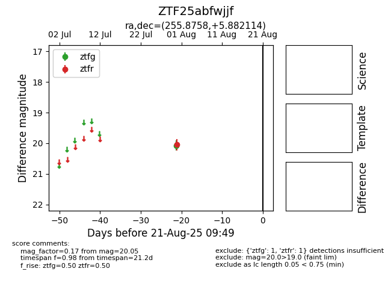

Target ZTF25abfwjjf at 2025-08-21 09:49, see:
FINK: fink-portal.org/ZTF25abfwjjf
Lasair: lasair-ztf.lsst.ac.uk/objects/ZTF25abfwjjf
ALeRCE: alerce.online/object/ZTF25abfwjjf
alt names
ZTF25abfwjjf (ztf,alerce)
coordinates:
equatorial (ra, dec) = (255.8758,+5.88211)
galactic (l, b) = (25.5656,+26.64258)
photometry
last ztfg=20.07, ztfr=20.05
1 ztfg, 1 ztfr detections
